Watch Together
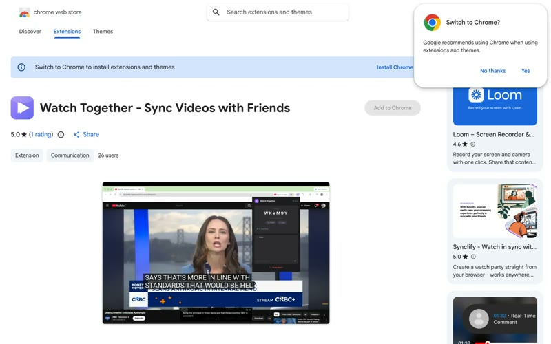
Cross-site video-sync extension shipping on the Chrome Web Store. WebSocket relay with heartbeat drift correction (<0.5s), host-mode enforcement, site-specific player adapters, 59 vitest tests + Puppeteer e2e.

Cross-site video-sync extension shipping on the Chrome Web Store. WebSocket relay with heartbeat drift correction (<0.5s), host-mode enforcement, site-specific player adapters, 59 vitest tests + Puppeteer e2e.
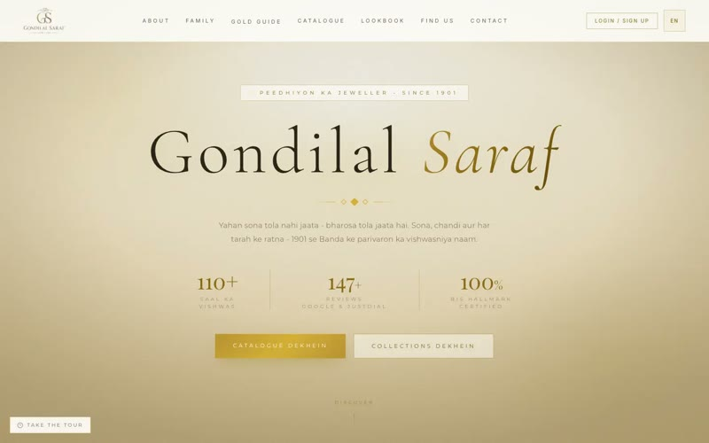
Three surfaces (public site + bilingual catalogue + admin ERP) in one Next.js 15 codebase. Image pipeline: Photoroom → Sharp → Gemini 2.0 Flash → Replicate SDXL. 15 Prisma models, 26 API routes, 85 tests.
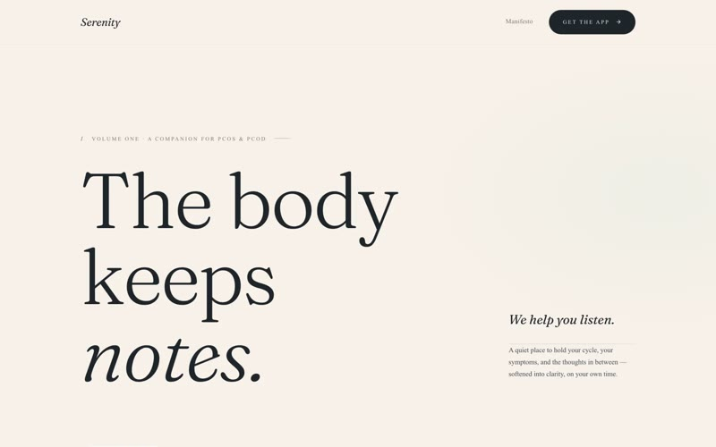
Rant-first health logging where Claude extracts structured symptoms, medications, and mood from free-form text. Lab-report PDF parser with Zod-validated JSON output and manual fallback form. 15 Prisma models.
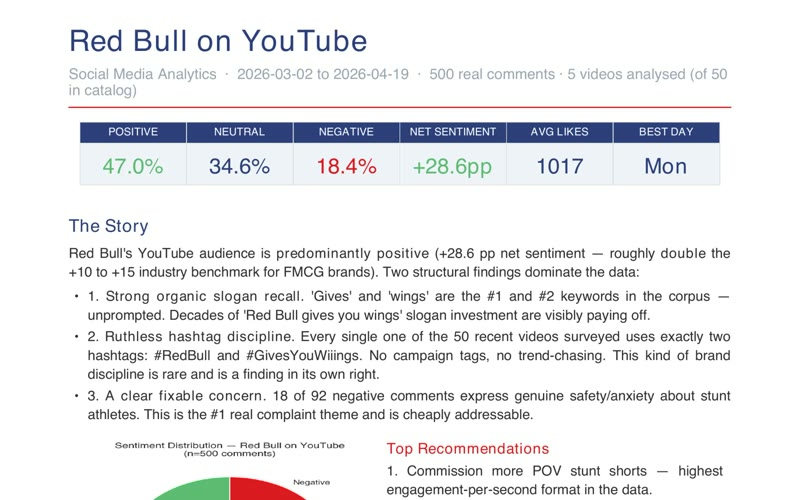
VADER sentiment on 500 YouTube comments. Net Sentiment Score +28.6 pp (2× industry benchmark), 100% hashtag discipline across a 50-video catalog, 8-chart Excel dashboard + executive-summary PDF.
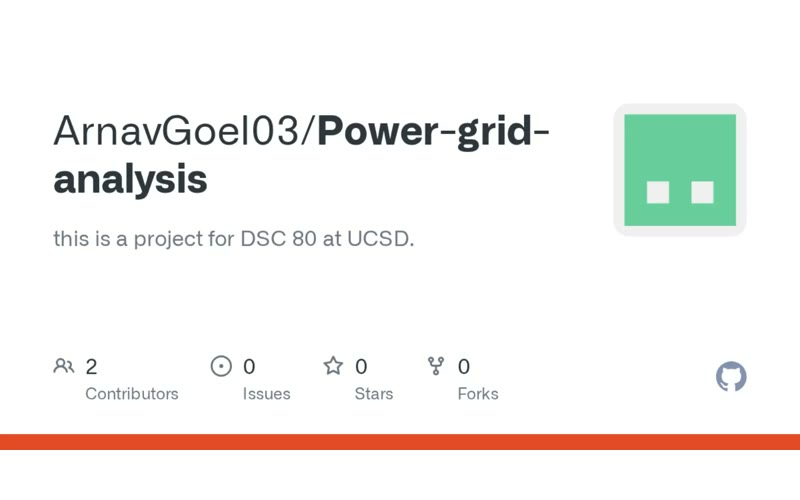
Analysed 1,534 major U.S. power outages (2000 to 2016). Random Forest with engineered features reached RMSE 6,189 min and R² 0.220, with fairness checks across weather vs. non-weather outages (p ≈ 0.007 on price-tier hypothesis test).
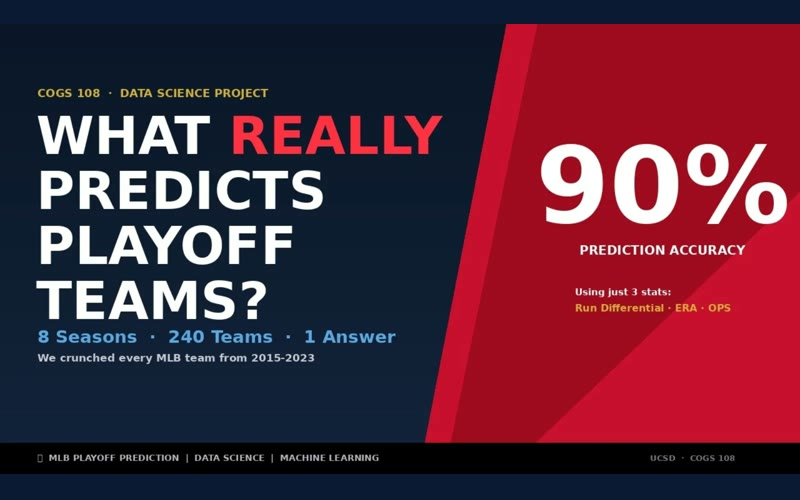
Team-of-5 Winter 2026 final project on early-season predictors of MLB playoff qualification 2015 to 2023 via Fangraphs pybaseball. Proposal → EDA → final analysis across four notebooks. I led the ethics section.
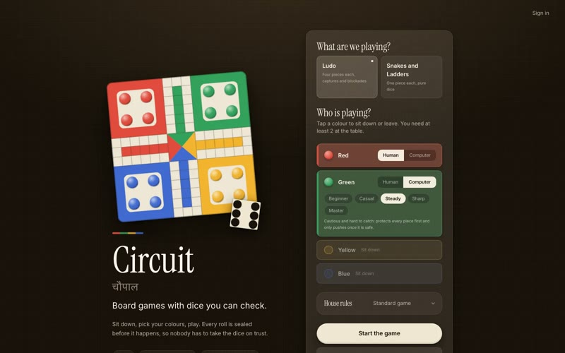
Board games with dice you can check. Circuit holds Ludo and Snakes and Ladders.
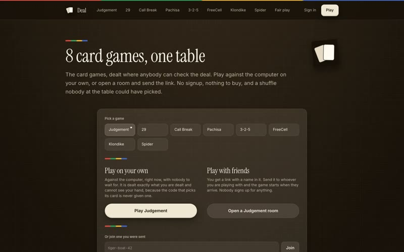
The card games, dealt where anybody can check the deal. Deal holds Judgement, 29, Call Break, Pachisa, 3-2-5, FreeCell, Klondike and Spider.
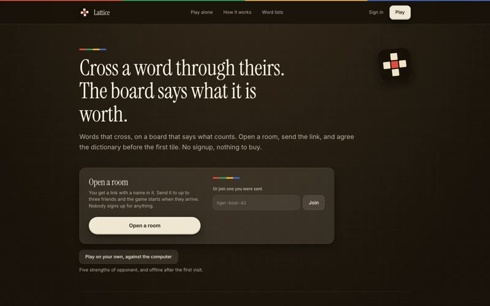
Lattice is a crossing-words board played at a table or solo against the computer.
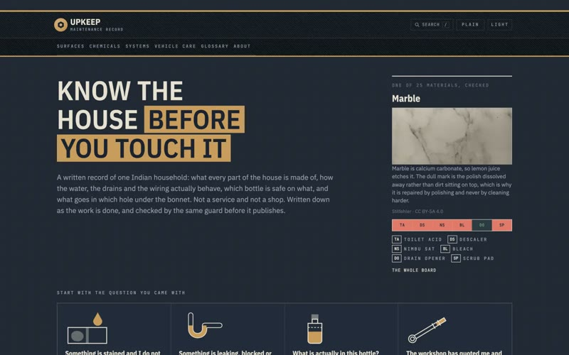
How an Indian home actually works, and what actually worked on it.
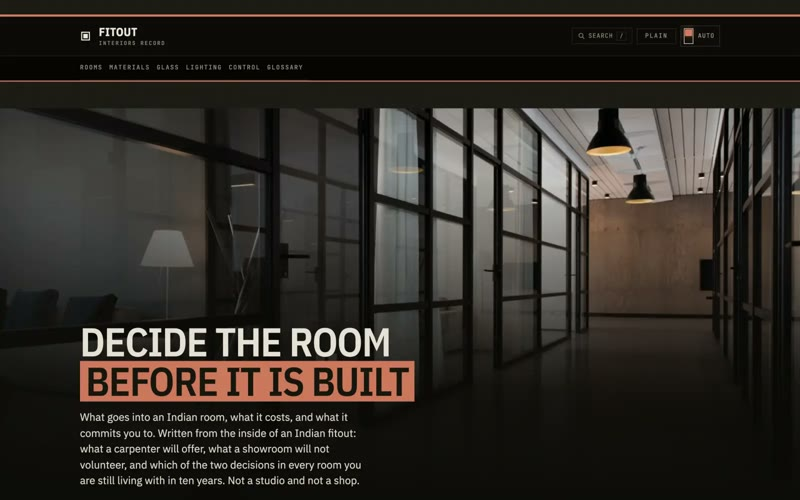
What goes into an Indian room, what it costs, and what it commits you to.
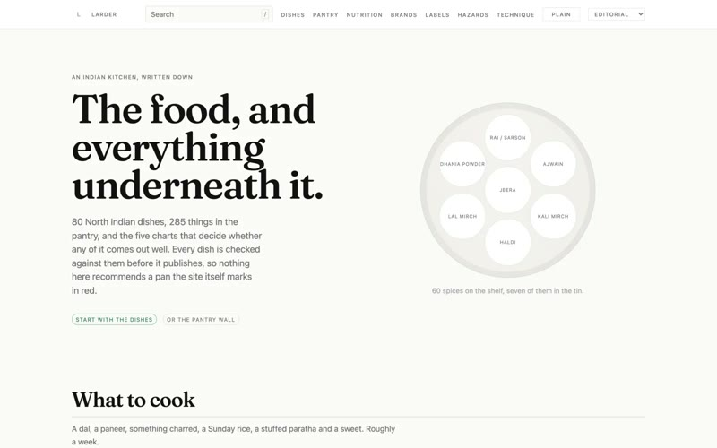
An Indian kitchen reference where every answer is computed from a registry and checked by the build, not typed twice and left to drift.